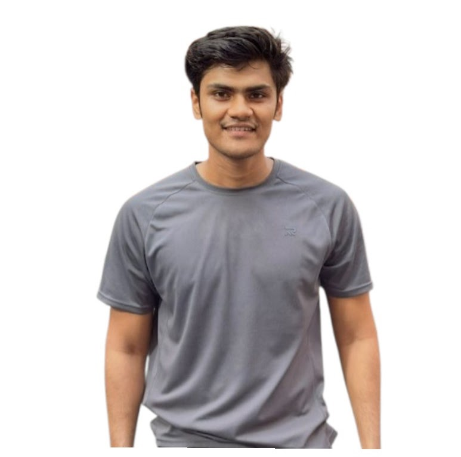

Hi, I'm Jabir !
Front-End Developer
A passionate Front-End Developer focused on building responsive, clean, and functional websites using HTML, CSS, and JavaScript.
About Me
A Computer Science and Engineering graduate from American International University-Bangladesh. I am passionate about technology, software development, and solving real-world problems through programming and innovative digital solutions.During my academic journey, I developed knowledge in several core areas of computer science including programming, data structures, databases, and web development. These experiences helped me build strong analytical thinking and technical problem-solving skills.I am a motivated and disciplined individual who values teamwork, creativity, and continuous learning. I enjoy collaborating in team environments where ideas can be shared and complex problems can be solved effectively.In several academic projects, I also took leadership roles by coordinating tasks, guiding team members, and ensuring project goals were completed within deadlines. These experiences strengthened my communication, leadership, and teamwork abilities.
Personal Info
- Father's Name: SK. Jakir Hosain
- Mother's Name: Rehena Pervin
- Date of Birth: 14.05.2004
- Nationality: Bangladeshi
- Address: Kuril, Dhaka